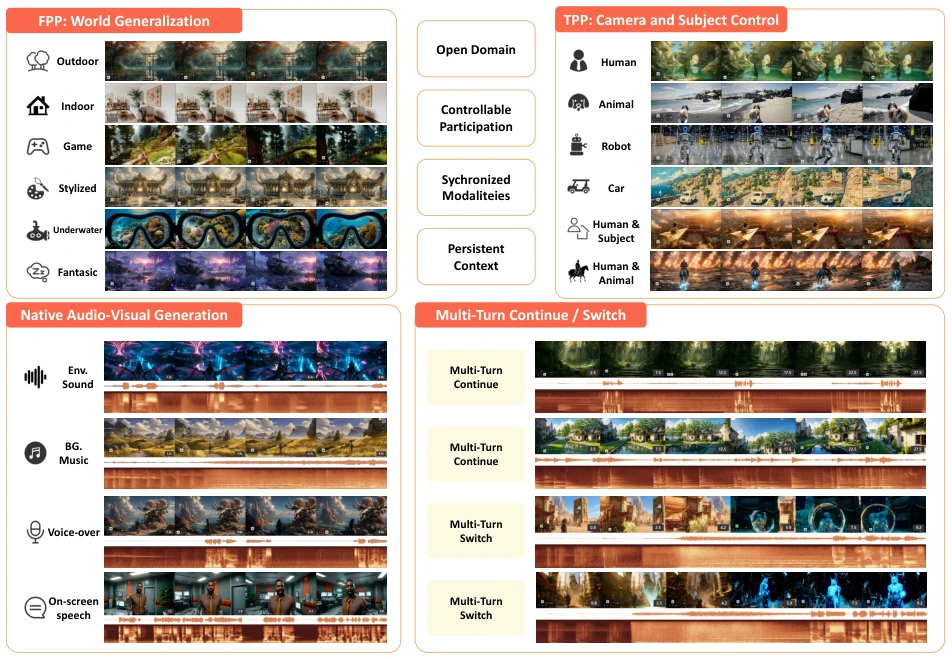
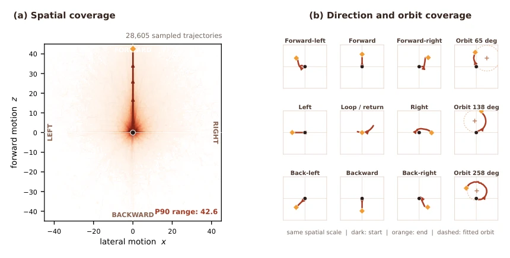
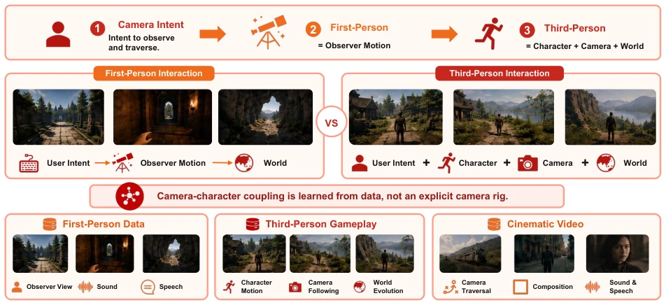
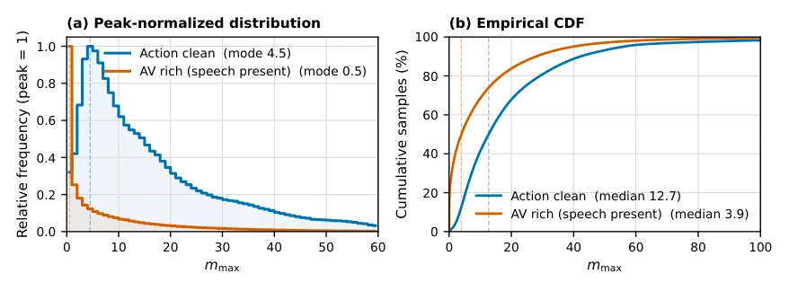
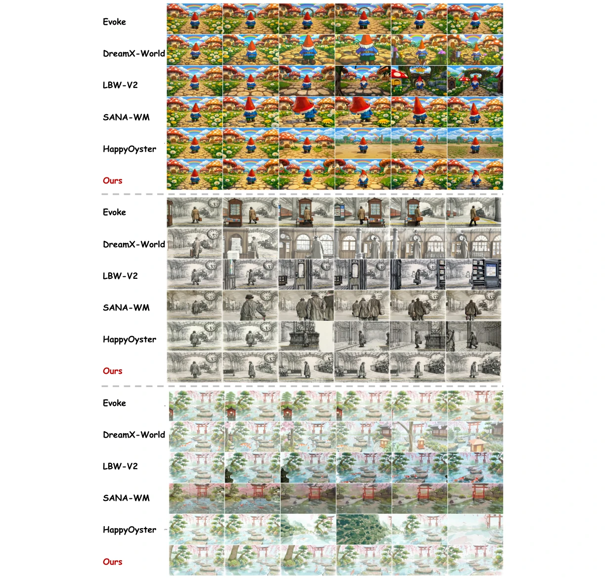
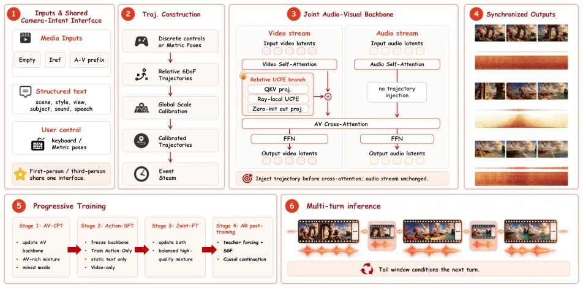
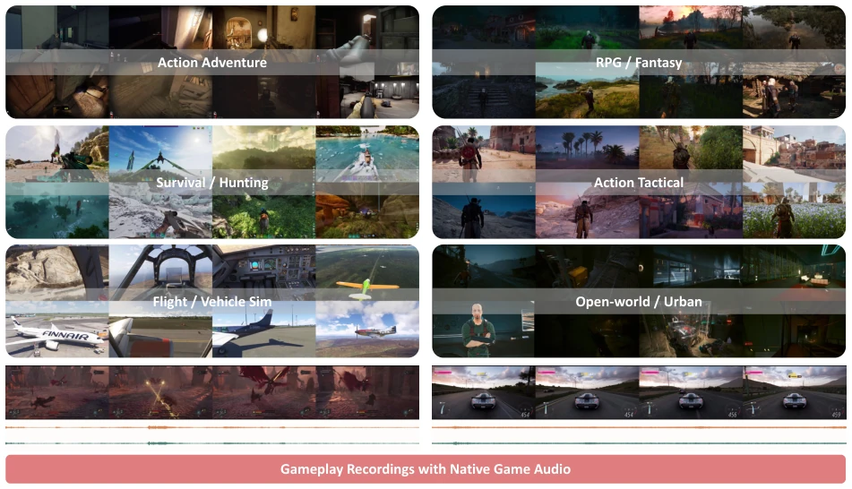
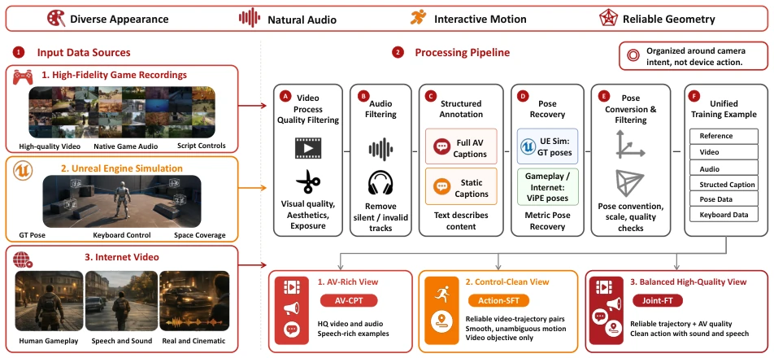
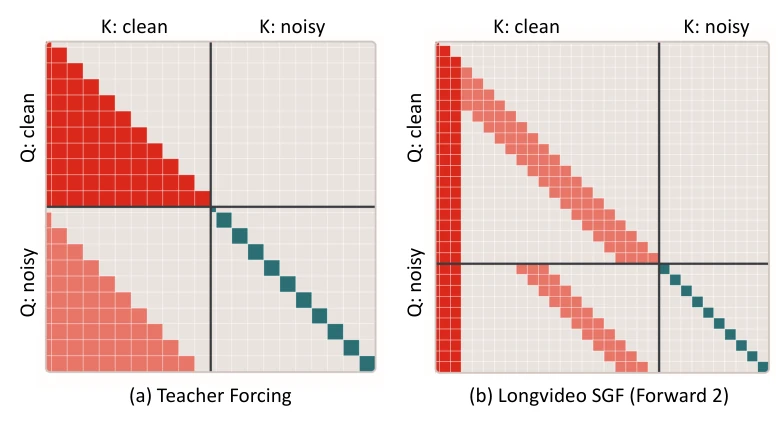

EchoWM attempts to transform generated videos into "enterable" virtual spaces, with 720p quality paired with multimodal audio, which sounds like paving a road for the metaverse. But to be honest, 720p is somewhat conservative in 2026, given that 4K is almost ubiquitous now; this resolution might be a bit blurry in VR. Its biggest selling point is unifying first-person and third-person views onto a single 6-DoF trajectory interface, saving the trouble of adjusting controllers for different perspectives, which is very pragmatic. However, "enterable" mostly refers to camera navigation rather than true physical entity interaction, which may not be sufficiently rigorous for embodied intelligence wanting to simulate complex physical collisions. Fortunately, audio synchronization is done well; footsteps and speech coordinate, making immersion significantly stronger than pure visual models. It counts as a good attempt for world models to go from "seeing" to "walking"; although image quality and physics engines have room for improvement, as an open-source project, the construction logic of the data engine is worth learning from.
Existing generative video models mostly remain at passive viewing, with interaction limited to prompts [1]. Although some world models support continuous actions [4], they often lack audio feedback, leading to missing physical feedback, such as no sound when walking or no echo when colliding. Hunyuan-GameCraft [18] supports game scenes but lacks a unified geometric control interface. In embodied intelligence, hearing is key to spatial perception and physical feedback; lacking audio makes the model like a "mute" person, making it difficult to understand the environment. Additionally, existing systems are typically designed for specific perspectives or controllers, lacking a unified camera intent interface. Therefore, building a world model that supports continuous navigation, multimodal synchronization, and perspective universality is crucial for achieving true embodied interaction. Currently, there is a lack of general models capable of handling both game and real-world scenes simultaneously, which is the gap EchoWM attempts to fill.

Figure 1 EchoWM turns audio-visual generation into an enterable world. Given a reference observation, a structured world description, and a user control sequence represented as a relative 6-DoF trajectory, one model supports first- and third-person interaction, synchronized environmental sound and speech, and multi-turn continuation.

Figure 5 Trajectory coverage of the control-clean mixture. (a) Aggregate lateral–forward motion coverage over 28,605 sampled trajectories; the marked P90 range summarizes the robust spatial extent. (b) Representative straight, diagonal, return-loop, and orbit trajectories shown at a common spatial scale. Black and orange markers denote trajectory start and end points, respectively, and dashed circles show fitted orbits.
The overall process is divided into data engine, unified camera intent interface, and progressive training. The data engine integrates internal game replays, internet games, UE simulation, and general web videos, recovering metric camera trajectories through ViPE. The core innovation lies in the "camera intent" interface, mapping discrete commands and continuous poses into a shared relative 6-DoF trajectory, injecting into video self-attention mechanisms via UCPE, unifying the control semantics of first-person and third-person views. The UCPE branch runs parallel to the original video self-attention, using only lightweight projection, reducing computational overhead. Training adopts a four-stage progressive strategy: first perform audio-visual continuous pre-training (AV-CPT) to establish a foundation, then freeze the backbone network for action fine-tuning (Action-SFT) to learn control, followed by joint fine-tuning (Joint-FT) to consolidate audio-visual and control, and finally achieve long-horizon generation through autoregressive post-training (AR Post-training). This design decouples audio-visual quality and control response, avoiding distribution conflicts. Additionally, global translation scale calibration ensures motion amplitude consistency between different data sources, avoiding scale jumps during continuation. In data preprocessing, long-sequence geometric optimization is performed through the ViPE framework combined with VGGT-Omega and MoGe-2, ensuring spatiotemporal consistency of trajectories.

Figure 7 Camera intent unifies first- and third-person interaction. The same user intent is realized as observer motion in first-person scenes and as coordinated camera–character–world evolution in third-person scenes. The coupling is learned from heterogeneous data rather than specified by an explicit camera rig.

Figure 8 Pose-magnitude distributions for global scale calibration. The plots show the peak-normalized distribution and empirical CDF of the per-clip maximum translation magnitude mi for the action-clean and AV-rich speech-present subsets. Action-clean clips contain broader motion magnitudes (mode 4.5, median 12.7), whereas speech-present AV-rich clips concentrate at smaller motions (mode 0.5, median 3.9). The heterogeneous support motivates one robust dataset-level percentile scale rather than independently normalizing each source.
Experiments were conducted on WBench Navigation and SANA-WM-Bench. EchoWM ranks first in navigation tasks, and visual quality is also at the top level. Regarding data, three mixed datasets were constructed: AV-rich, Control-clean, and Balanced, corresponding to different training stages respectively. Ablation experiments show that the progressive training strategy significantly improved the stability of long-horizon generation. Trajectory coverage analysis indicates that the control-clean dataset provided rich motion amplitude support. Although mainly based on game and simulation data, it also demonstrated good generalization ability on general web videos. However, 720p resolution limits its application potential in high-resolution scenarios, and audio generation mainly relies on ambient sound and speech; the interactivity of complex physical sound effects still needs verification.

Figure 11 WBench Navigation comparison.

Figure 6 Overview of EchoWM. Media context, structured text, and user controls share a unified camera-intent interface. Discrete controls or metric poses are converted into globally calibrated relative 6-DoF trajectories and serialized as an event stream. A relative UCPE branch injects this trajectory into video self-attention before audio–visual cross-attention, while the audio stream receives no direct trajectory condition. Four progressive training stages yield synchronized audio–visual generation and support multi-turn inference through synchronized tail-window conditioning.
其他图片Other Figures

Figure 2 Gameplay recordings with native game audio. Representative frames from the internally collected gameplay corpus span six activity categories, with synchronized native-game audio waveforms shown below the visual sequences.

Figure 4 World data engine. We combine internally collected game recordings, human-played Internet game recordings, Unreal Engine renders, and general Internet video to complement action logs, natural audio, interactive motion, reliable poses, and cross-domain appearance. A shared pipeline constructs synchronized clips, filters and annotates video and audio, recovers reliable metric poses, and forms AV-rich, control-clean, and balanced high-quality mixtures for AV-CPT, Action-SFT, and Joint-FT, respectively.

Figure 9 Chunk-level causal attention patterns used for streaming post-training. (a) The audio-visual teacher-forcing pattern used by short-horizon reconstruction: each noisy query attends to the preceding clean context and the noisy tokens of its current chunk, while clean targets and future chunks are excluded. (b) The mask used by Forward 2 of long-horizon SGF, where access to clean history is additionally constrained by the sink-plus-FIFO KV-cache policy.